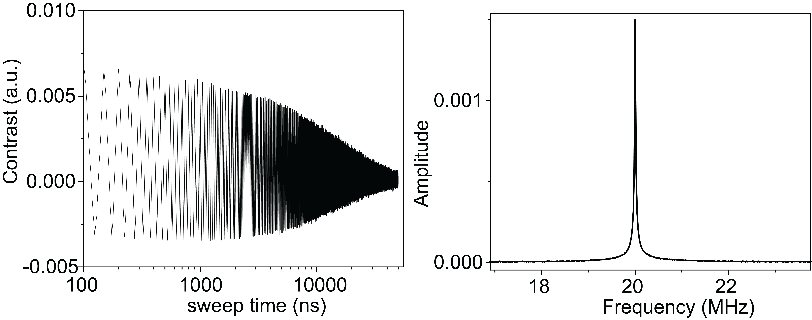

⟨ψ| notes / quantum sensing
Double-quantum control and AC magnetometry in hBN
We use two synchronized microwave tones to control boron-vacancy spin ensembles in hexagonal boron nitride and measure an AC magnetic field.
In spin magnetometry, we prepare a superposition, let a magnetic field change its relative phase, and map that phase onto a fluorescence signal. The two states we choose determine the field response and the shifts that enter the measurement.
In our work accepted in Physical Review Applied, we use double-quantum (DQ) coherence in negatively charged boron vacancies, VB−, in hBN. We control the spin triplet and detect an applied 20 MHz magnetic field. In a comparison under the same experimental conditions, DQ sensing gives a 2.57-fold improvement in signal-to-noise ratio over single-quantum (SQ) sensing.
Choosing the two outer spin states
The VB− ground state is a spin triplet, with spin projections ms = 0, +1, and −1. In an SQ measurement, we use a superposition of |0⟩ and one of the outer states. For DQ sensing, we use |+1⟩ and |−1⟩, whose spin projections differ by two.
In a simple axial-field picture, the two transition frequencies from |0⟩ are
Here γe is the electron gyromagnetic ratio in Hz/T, and Deff includes shifts shared by the two outer levels. Taking the frequency difference cancels this common contribution and doubles the magnetic-field slope relative to either SQ transition. We use this approximation when transverse mixing is small compared with the axial Zeeman splitting.
Fang and colleagues demonstrated this principle through quantum beats in diamond NV centres, suppressing temperature- and strain-induced shifts of the common splitting. DQ coherence responds more strongly to magnetic noise as well as to the field of interest. The ensemble experiments of Bauch and colleagues show why the dominant noise source matters. Rejecting common shifts can help, but DQ coherence alone does not guarantee a longer dephasing time.
Making DQ coherence in hBN
We drive the two allowed transitions, |0⟩ ↔ |+1⟩ and |0⟩ ↔ |−1⟩, with synchronized microwave tones. By setting their amplitudes, phases, and pulse durations, we prepare coherence between the outer states. After the sensing interval, we map the accumulated phase onto spin populations and read them out through spin-dependent fluorescence.
Our instruments share a 10 MHz reference. We control the microwave IQ modulation with an arbitrary waveform generator, combine the two tones, and deliver them through a coplanar waveguide. We use green laser pulses to initialize and read out the defect ensemble in an hBN flake at room temperature.
Mamin and colleagues used dual-frequency DQ control for multipulse magnetometry with near-surface NV centres in diamond. In hBN, we need to maintain control across a broadened ensemble of resonances. We observe about twice the optical readout contrast with DQ driving as with SQ driving. This contrast gain concerns the fluorescence measurement. The factor of two in the ideal magnetic phase response comes from the choice of spin states.

From a spin echo to an AC-field spectrum
We use a spin echo to refocus a static frequency offset. If we time the spin inversion to the sign change of an oscillating field, the field-induced phase accumulates across the echo. We can therefore select an AC frequency through the pulse timing. For an ideal DQ echo, we write the magnetic phase as
The switching function y(t) changes sign under the refocusing operation. Matching its sign to the AC field makes successive contributions to the phase add. This ideal expression neglects finite pulse duration and control errors.
In correlation spectroscopy, we compare two sensing intervals separated by a variable delay. By scanning that delay and Fourier-transforming the resulting oscillation, we extract the field frequency. Laraoui and colleagues used this approach to resolve nuclear-spin signals near an NV centre over correlation times longer than a single electron-spin coherence interval.
We apply a 20 MHz RF magnetic field with a nearby coil and observe a Fourier peak at the same frequency in the correlation measurement. Without an applied RF signal, we find a separate feature near 46.3 MHz, which we attribute to hyperfine coupling to nearby nuclear spins.

Reading the difference frequency with Qdyne
For quantum heterodyne detection, or Qdyne, we repeat a fixed sensing sequence against a stable classical clock. In each block, we prepare the spin, sample the field, and record the fluorescence. The field phase relative to the sequence advances between blocks, producing a beat in the readout record.
We measure the difference frequency δ = fac − fref between the AC signal and the timing reference. In the small-signal regime, the phase-sensitive fluorescence follows the relative phase between the field and the sequence. We extract the beat by Fourier-transforming the timed record, then use the reference and the selected frequency band to recover the field frequency.
Schmitt and colleagues and Boss and colleagues demonstrated frequency resolution far narrower than the inverse of a single spin-coherence time with clock-referenced readout. We can reinitialize the spin in each cycle because the classical clock maintains the phase reference between readouts.
The sensing window sets how much phase we collect per block and which frequencies we detect. The repetition period sets the sampling rate and the resulting alias bands, while the total record length sets the Fourier-bin spacing. To assign an absolute frequency, we need the reference and the appropriate alias band. Clock stability and the coherence of the signal limit how far we can extend the useful record.
Rizzato and colleagues demonstrated RF sensing and coherently averaged synchronized readout (CASR) in hBN VB− ensembles. We build on this sensing approach with DQ control and a comparison against SQ control.
The measured signal-to-noise gain
We compare SQ and DQ control under the same Qdyne measurement conditions.
| Control | Signal-to-noise ratio |
|---|---|
| Single quantum | 100 |
| Double quantum | 257 |
| DQ / SQ | 2.57 |
The measured SNR depends on pulse fidelity, ensemble inhomogeneity, photon collection, and noise. We cannot predict it by multiplying the ideal phase-response gain by the optical contrast gain. The 2.57-fold result is the SNR ratio in this experiment. To quote an absolute sensitivity in T/√Hz, we would need a field calibration and a measurement-time normalization.
Improving control across the ensemble
I would first map the contrast and SNR against microwave detuning and amplitude to see how much control error the DQ measurement tolerates. In NV magnetic microscopy, Hart and colleagues' DQ 4-Ramsey protocol uses phase cycling to reject residual SQ contributions from imperfect pulses. I would test whether similar phase cycling can suppress residual SQ contributions in hBN.
With calibrated field amplitudes, we could then compare absolute sensitivity at matched acquisition times. Tracking the noise floor over longer records would help us distinguish limitations from microwave control, photon statistics, and drift, and decide which part of the experiment to improve next.